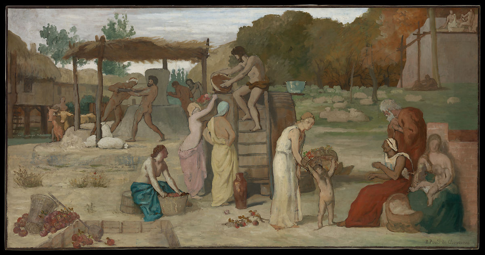

<head>
<meta charset="UTF-8" />
<meta name="keywords" content="drawing, painting" />
<meta name="description" content="drawings by Sunjy" />
<title>Sunjy</title>
<link rel="shortcut icon" type="image/x-icon" href="../../mImages/mCommon/favicon.ico" media="screen" />
<link rel="stylesheet" type="text/css" href="../../mCsses/mCommon/mCssA.css" />
<link rel="stylesheet" type="text/css" href="../../mCsses/mCommon/mCssB.css" />
<link rel="stylesheet" type="text/css" href="../../mCsses/mCommon/mCssC.css" />
<link rel="stylesheet" type="text/css" href="../../mCsses/mCommon/mCssD.css" />
<link rel="stylesheet" type="text/css" href="../../mCsses/mContent/mCssA.css" />
<link rel="stylesheet" type="text/css" href="../../mCsses/mContent/mCssB.css" />
<link rel="stylesheet" type="text/css" href="../../mCsses/mContent/mCssC.css" />
<link rel="stylesheet" type="text/css" href="../../mCsses/mContent/mCssD.css" />
</head>
<script type="text/javascript" src="../../mScripts/mContent/mContentAA.js" /></script>
<script type="text/javascript" src="../../mScripts/mContent/mContentAB.js" /></script>
<script type="text/javascript" src="../../mScripts/mContent/mContentAC.js" /></script>
<script type="text/javascript" src="../../mScripts/mContent/mContentAD.js" /></script>
<script type="text/javascript"></script> 
<script type="text/javascript">
document.write('<div class="mImgAbsolute"></div>');
/*
document.write('<p class="mFontSizeBColor" />From a white paper...</p>');
document.write('<table class="center"><tr><td>');
document.write('');
document.write('</td></tr></table>');
*/
</script>


<script type="text/javascript">
document.write('<p class="mFontSizeBColor" />Cider</p>');
document.write('<p class="mFontSizeSColor" />By Pierre Puvis de Chavannes, ca. 1864. Men grind grain while citizens of all ages prepare apple cider, one of the traditional beverages of the northern French province of Picardy. This painting and <i>The River</i> are studies for the left and right sides of Puvis’s mural <i>Ave Picardia Nutrix (Hail, Picardy, the Nourisher)</i>. Made for the newly constructed Musée de Picardie in Amiens in 1864, the paintings celebrate the region’s abundant natural resources and its idealized, distant past. Puvis’s decorations for the museum launched his career as a preeminent painter of murals for state buildings in France.</p>');
document.write('<table class="center" /><tr><td>');
document.write('The River</i> are studies for the left and right sides of Puvis’s mural <i>Ave Picardia Nutrix (Hail, Picardy, the Nourisher)</i>. Made for the newly constructed Musée de Picardie in Amiens in 1864, the paintings celebrate the region’s abundant natural resources and its idealized, distant past. Puvis’s decorations for the museum launched his career as a preeminent painter of murals for state buildings in France." />');
document.write('</td></tr></table>');
</script>


